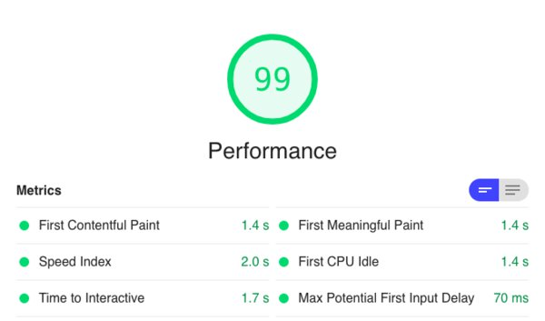
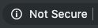

30 Ways To Improve Your Website Performance
It can be daunting when trying to improve website performance.
Where do you start?
With recommendations changing all the time, how can you make sure that you are not left behind?
With so many areas to improve, where is the best place to concentrate your efforts?
This article breaks down website performance into small tasks.
Each one of the tasks is actionable, we will ask:
- WHY are we improving this aspect of the site
- WHAT to check on the page
- HOW to make the improvement
We will also categorize the impact of fixing each task so that you get the biggest bang for your buck.
- High - A large increase in site speed
- Medium - Depending on the structure of your site this will have a significant speed increase
- Low - Small increase but worth looking at. It all adds up.
There is no fluff here. All the improvements are actionable and you can increase your site speed today!
We only need a single tool to investigate the improvements on your site.
Google Chrome Developer Tools.
To access these tools open Chrome and navigate to your site. Right-click the page and choose the Inspect option.
You now have developer tools open, let's improve your site!
Here is the checklist of improvements we are going to make:
As you can see we have a lot to get through.
Once you have performed these tasks a few times, it will feel like second nature.
At a high level there are three principles we are following:
- Page assets should be as small as possible (Known as Page Weight).
- Download only the assets we need to show the page (Async Loading).
- Download assets we need in advance (Pre-loading)
All 30 improvements fall into one or more of these three principles.
Simple, right?
Before we get started one word on monitoring.
Monitoring
Before we start improving the site we need to track performance.
If we neglect this step it will be hard for you to learn what has worked and what has had little affect.
The principle we need to follow is:
Improve, then measure.
To measure your site I would recommend that you use the Google Lighthouse tool.
In the article Benchmark Websites, I show you how you can use a Google Sheet to track the performance.
The Google Sheet tracks the performance daily so you can see how your site speed improves over time.
You can also use PageSpeed Insights or WebPageTest.org if you prefer.
Now we have monitoring in place lets dive into the improvements.
Images
When optimizing a new site start with images.
They are the number one cause of website performance issues.
They also account for over 60% of pages total page weight.
Luckily, there are lots we can do to improve them.
Compress Images
Impact: High
Why
You can compress images without losing quality.
A photo taken with a camera will be a large file and we can use compression to reduce the file size.
By selecting the correct compression type, we can reduce image size by up to 90%.
What
To check if compression could improve the images on your site, use the Dev Tools and select the network tab.
You can filter by Img and it will show you the images downloaded. In the size column, it will show the resource file size and the downloaded file size. It's the resource file size we are looking at.
If you see files that are larger than 100kb it's time to try compression.
How
Follow these rules when deciding on the type of compression to use:
- If the image is a JPEG and larger than 100kb compress again using JPEG.
- If the image is a PNG and it has no transparency then use a compressed JPEG.
- If the image is a PNG is transparent then use WebP and fallback to an optimized PNG.
A great tool to use for image compression is Squoosh.
It allows you to see a before and after using a slider as above.
Crop Images to Correct Aspect Ratio
Impact: Medium
Why
If you are showing square images, make sure that the image you download is also square.
In other words, keep the aspect ratio the same.
Why download a rectangle image but then display a square. You are downloading more pixels than needed.
This adds to the download size and it will slow down the display of the image.
What
Look through the images on the site. Can you see anywhere the display ratio is different from the image ratio?
Look for image cropping within CSS like this:
img {
object-fit: cover;
}This is a sign that images are being cropped.
How
Using the resize tool from Squoosh we can take an image and change the aspect ratio.
Remove Image Metadata
Impact: Low
Why
When we take a photo the image contains metadata. Data such as the camera specification and even the location of the photo.
This can all add weight to the image and is not needed by your customers.
What
To check if your images have this, use an online image metadata tool like metapicz to see.
Enter the image URL into the tool and it will return any metadata held within the image.
How
Many image compression tools such as Squoosh will remove the metadata when compressing.
Lazy Load
Impact: High
Why
Lazy loading is the technique of loading images only when they become visible to the user.
If you have below-the-fold images, you should consider lazy loading them.
This means that the initial page can load quicker as it only downloads the images at the top of the page.
What
To see if your page has enabled lazy loading open Dev Tools and clear the network tab.
Start to scroll the page.
If there are network requests for images as you scroll down, then lazy loading is in use.
How
Native lazy loading is the simplest way to take advantage of this technique. There is a free Wordpress plugin from Google you can add to your site.
If you are not using Wordpress then use the loading attribute on your images, like this:
<img src="cat.jpg" loading="lazy" alt="Awesome Cat!">Native lazy loading is only supported by Chrome as of 2019 but this will improve over time.
There are many Javascript implementations that you can try.
Create Responsive Images
Impact: Low
Why
There are many different size devices in use today. Mobile, tablet, and desktop all working at different resolutions with different screen sizes.
There are also retina displays that have 2x or 3x the pixels.
To support these devices we want to show a nice clear image. We do not want to have blurry images that negatively affect the user experience. We should provide different images for each resolution.
What
Check to see if there are any picture tags in the HTML. You are then looking for different sources of the same image.
It can help to search for “srcset” in the markup.
How
To support different resolutions we need to create images at various widths. It's common to see 3 widths for mobile, tablet and desktop.
Use the <picture> tag to add images at different widths:
<picture>
<source media="(max-width: 799px)" srcset="cat-480w.jpg">
<source media="(min-width: 800px)" srcset="cat-800w.jpg">
<img src="cat-800w.jpg" alt="Cat">
</picture>Use Vector Graphics
Impact: Low
Why
Vector graphics are images that do not lose quality when they get resized.
In the last improvement, we created many different versions of an image so that it can scale to the user's device.
With vector graphics like SVG, we can scale a single image without losing quality.
As we zoom in on the peach stone above we lose no quality, the image stays clear.
This works for logos, graphics, and icons that are on your page.
What
Look for any images in the network tab that you can convert to SVG. These will be sprite sheets, logos, and any graphics.
Unfortunately, it does not work for Photos.
How
You can save in most vector graphics packages to SVG format.
Make sure that you add server-side compression to any SVG files. See more on this improvement later on in the list.
HTML
When we optimize the HTML, we are making sure that we reduce the file size and load the assets efficiently.
Minify the HTML
Impact: Medium
Why
The first principle was:
Page assets should be as small as possible.
The smaller the HTML file is, the faster it will download to the browser.
There is a knock-on effect as the faster the HTML downloads the quicker the assets can start downloading.
Often, we minify CSS and Javascript but rarely do I see HTML minified.
What
To see if your site has a minified HTML file, open up Chrome Developer Tools and select the network tab.
After, refreshing the page click on the first row. This will be the HTML.
Click on the response tab and look to see if there are spaces and indentations.
If there are then the file is not minified.
Let's look at how we can minify it.
How
We can use a tool such as an HTML minifier to make the file smaller.
There are many options to choose from, some of the important ones we will dig into in more detail next.
For an initial idea of what this looks like accept the defaults for now.
You should see that it has removed all the spaces and indentations.
Remove Boolean Attributes
Impact: Low
Why
We often include markup in our HTML such as:
<p hidden="true"></p>The markup above is the same as this:
<p hidden></p>Notice the missing ="true".
There is no need for the extra ="true" and this text is redundant.
It is safe to remove all these default true values from your HTML.
What
To check if your site has this open Dev Tools and click on the Elements tab.
This will show the HTML and you can perform a search for true.
If you find some you can remove them.
How
Most HTML minifiers will have an option to remove these values.
The HTML minifier tool we mentioned above has a Collapse boolean attributes option. To remove the “true” values check this checkbox.
Remove HTML Comments
Impact: Low
Why
Comments are often found in HTML.
They are there to help a developer or technical stack-holder understand the markup.
These comments are not useful to your customer.
There is no need for them on a production website and so you can remove them.
What
When looking at the HTML file in Dev Tools, look for any green highlighted text.
<!---I am a Comment! --->If you find some these are comments and you can remove them.
How
The HTML minifier can remove these comments for us.
There is a section in the options called Remove comments. Check this to remove all comments from the file.
Remove Legacy Tag Attributes
Impact: Low
Why
There are many defaults in HTML 5 that make some markup redundant.
It is important to be aware of these defaults so that you know what to remove.
What
In Dev Tools click the Elements tab and search for text/javascript and text/css.
Which will return results like this:
<script type="text/javascript"></script>This would tell the browser that we were going to load a script tag and run Javascript.
This is no longer required.
Now all browsers by default will assume that a script tag is loading Javascript.
Replace the above code with:
<script></script>How
Again, using an HTML minifier there is an option labeled HTML5. Check this when minifying and it will remove these attributes.
Minify inline CSS and Javascript
Impact: Medium (depending on the amount of CSS and Javascript inlined)
Why
If the HTML file has Javascript or CSS within the HTML file (called “inline”). For example:
<style>
.background {
border: none !important;
margin: 0px !important;
padding: 0px !important;
width: 1px !important;
min-width: 100% !important;
overflow: hidden !important;
display: block !important;
visibility: hidden !important;
position: fixed !important;
height: 1px !important;
pointer-events: none !important;
user-select: none !important;
}
</stlye>We can run minify this reducing it to:
<style>.background{border:none!important;margin:0!important;padding:0!important;width:1px!important;min-width:100%!important;overflow:hidden!important;display:block!important;visibility:hidden!important;position:fixed!important;height:1px!important;pointer-events:none!important;user-select:none!important}</stlye>Making the file size smaller.
What
In the Dev Tools open the Network tab and locate the HTML file and click on the “Response”. Search for the style or script tag in the HTML, if there is CSS or Javascript written inline.
If there is, check to see if it has whitespace and indentations. If it does we can minify it.
How
We can use our old friend HTML minifier. Make sure you select the options Minify CSS and Minify Javascript.
Load CSS Before Javascript
Impact: High
Why
When a webpage is loading it loads in sequential order. So if you have the following markup:
<script src="cats.js"></script>
<link rel="stylesheet" href="cats.css"/>The browser will download the script first. Then block the page from loading before it starts to download the CSS.
Since we need the CSS to show the final page, it is better to load the CSS first which will decrease rendering time.
What
Search for Script and stylesheet in your HTML. You can view this in the Network tab of Chrome Dev Tools, ensure that they are in the correct order.
How
Reorder the tags so that all required CSS loads before the javascript:
<link rel="stylesheet" href="cats.css"/>
<script src="cats.js"></script>Limit iFrames on Page
Impact: High
Why
As iFrames are actually pages inside pages there use can decrease the performance of a site.
The more iFrames you add, the slower the site will be.
What
To locate the iFrames, use Developer tools click the “Elements” tab.
This will show the HTML markup from here you can perform a find and search for iframe.
How
Assess the iFrames and consider whether an API call makes more sense.
Use Pre-load
Impact: Low
Why
We can also pre-load files in advance.
When a customer lands on your site and the page has finished downloading. We have the chance to pre-load assets that we need later on.
What
Check for images, fonts, CSS or javascript that you need later on in the customer journey and prefetch it.
How
For example, you may have a font used on the next page. Well, you can load it before the user clicks the next link using the prefetch link tag:
<link rel="prefetch" href="/assets/fonts/font.woff2">Javascript
The Javascript ecosystem has exploded in the last few years. With frameworks like React, Angular and Vue proving popular with developers.
Javascript is becoming a very important aspect of modern web application performance.
We must ensure that we keep javascript files small and only load what the page needs when it needs it.
Lets take a look at some improvements.
Minify the Javascript
Impact: Medium
Why
Like with HTML we can minify Javascript. We can take a larger Javascript file and reduce it to a much smaller one. All without affecting how the Javascript works.
What
We can use Dev Tools to look for minified Javascript. Look at the response in the network tab and make sure the file has no comments or indentations.
How
It is common to see sites loading JQuery directly from JQuery.com without adding .min to the file.
The .min version is the minified version of JQuery and can save many KB's:
- The original JQuery file is 273KB.
- The minified version is 93KB.
So check the site to make sure that the minified file is being loaded.
If there is not a minified version of a Javascript file then you can create one using UglifyJS.
Async Loading
Impact: Medium
Why
When you have a <script> tag on the page it will cause the page to stop loading.
The browser will then request the file and download it.
Once downloaded it will execute the Javascript, and then continue with the rest of the HTML.
This can have a huge impact on page loading times.
To stop this blocking there are two attributes you can use async and defer.
When using these attributes the Javascript file downloads without blocking the page.
With async, it will execute the Javascript as soon as it has finished downloading.
With defer, it will download the script and once the HTML has rendered it will execute the Javascript.
What
You can look at the HTML file in the Elements tab of the Dev Tools.
Look for where the script tags are being loaded.
Do they have the async or defer keywords.
How
Once you have found a script on the page, you need to decide to use either the defer or async tags.
If the script has no other dependencies and does not need the rendered HTML then use the async attribute.
If the script requires other scripts to run such as jQuery and needs rendered HTML then use defer.
Sometimes you need one file to load before another. If you use the async attribute then there is no guaranteed order.
If you use defer then they will execute in order.
<script defer src="JS/jquery-3.1.1.min.js"></script>
<script defer src="JS/my.js"></script>Bloated Frameworks
Impact: Medium
Why
Often frameworks get bloated over time.
When they do, developers work on a lighter faster version.
JQuery is a good example. Many JQuery alternatives are smaller in size.
What
Look for frameworks used by the website.
Then research to see if a newer, faster, smaller alternative is available.
How
For JQuery, consider using the smaller alternative Cash.
Latest Version
Impact: Low
Why
If you are using third party frameworks, make sure that you are keeping the versions up-to-date.
There are performance and security improvements in the latest updates.
What
Find all the third-party Javascript files on the site and see if a newer version is available.
How
A good place to visit is NPM. On this site, you can search for a framework and look at the latest version number.
CSS
CSS files can keep growing over time and often it can be difficult to know if certain classes are still in use.
Its important to review the CSS for this reason.
Minify the CSS
Impact: Medium
Why
As we have with Javascript and HTML we can minify CSS.
What
Checking for minified CSS in Dev Tools is the same as how we checked the Javascript.
Open the network tab and look for CSS files. Click on the response tab and see if the file has indentations and comments removed.

How
If you find an un-minified CSS file then use an online tool such as CSSNano to reduce the file size.
Unused CSS
Impact: Low
Why
There is often CSS in the stylesheet that is no longer used by the page.
This is common as the site evolves.
You should remove all unused CSS to reduce the file size.
What
It can be almost impossible to look at a CSS file and figure out if the styles are in use.
A simpler way is to perform a Lighthouse Audit.
To do this in Chrome Developer Tools open the Audit tab and run a Performance Audit.
This will flag the Remove unused CSS opportunity if your site would benefit.
How
We can remove unused CSS using the online tool UnCSS.
Load the HTML and the CSS into this tool and it will strip out all the CSS that is not needed.
One word of caution, sometimes the CSS appears on another page so be careful not to remove CSS that you need later.
Above the fold
Impact: Medium
Why
We can also load only the critical CSS to render the visible above-the-fold content.
This is the CSS that renders the initial part of the page that the user sees before they start scrolling.
What
To check if critical CSS is being loaded on the site, look at the HTML and see if there are styles inline in the head.
If there is, check to see if they affect the first part of the visible page.
How
We can also use UnCSS to extract the CSS needed for the above the fold content. To do this select the HTML that is above the fold and insert it into the tool.
Then add the CSS styles.
Once you hit “UnCSS my styles” you have the critical CSS and you can insert this inline to the HTML.
To do this add the critical CSS to a <style> tag in the <head> section of your HTML.
Add the remaining CSS to a stylesheet using a <link> tag and add preload. We will look at this next.
Use Preload
Impact: Medium
Why
Once you have extracted the above-the-fold CSS so that it appears inline. You still need to load the rest of the CSS.
Don't just add the stylesheet straight back into the page as this could delay and block the page from rendering.
What
Check if there are any <link> tags in the HTML that have preload enabled.
How
To preload the css and to stop it from blocking the rendering, change this:
<link rel="stylesheet" href="styles.min.css">To this:
<link rel="preload" href="styles.min.css" as="style" onload="this.rel='stylesheet'">Remove inline CSS
Impact: Low
Why
OK, so I know I said add inline CSS for above-the-fold CSS. This is about all other CSS.
Especially, any inline CSS added to the <body>.
Remove this and add it to an external CSS file using preload. This will make the HTML smaller and speed up the download of the file.
What
Look in the “Network” tab and at the HTML file for any inline CSS.
How
Extract the existing CSS and save as a file, then replace the <style> tag with a <link> tag.
Fonts
Fonts are growing in size. We need to optimize them so that they do not slow the rendering of the page.
Use WOFF2
Impact: Medium
Why
Google says that WOFF2 can provide 30% extra compression on WOFF. So make sure that you are using it.
What
To check that the font is WOFF2 use the network tab and check the font file extension.
How
WOFF2 is not supported by all browsers, so you will need to fall back to WOFF and TTF.
To do this in your CSS use a @font-face:
@font-face {
font-family: 'MyWebFont';
src: url('webfont.woff2') format('woff2'),
url('webfont.woff') format('woff'),
url('webfont.ttf') format('truetype');
}and then we can use it in CSS styles like so:
body {
font-family: 'MyWebFont', Fallback, sans-serif;
}Use Pre-connect
Impact: Low
Why
Often fonts (and sometimes other assets) are on a different server to the HTML.
When this happens the browser needs to do a DNS lookup of the font domain name.
To reduce the time it takes to do this lookup we can perform the DNS lookup before the CSS loads the font.
Making the initial connection faster.
What
To do this on the “Elements” tab search for “preconnect” in the HTML.
Have a look to see if there are any <link> tags that have the DNS domain name of the location of the fonts.
How
To enable pre-connect, add the following code to the head of the page:
<link rel="preconnect" href="https://fonts.gstatic.com" crossorigin>Remember to replace the URL above with the URL location of your fonts.
Server
Here we are making changes to how the server sends the files to the browser.
A good metric to track here is TTFB or Time To First Byte. This is the metric that tracks the speed at which the files returned from the server.
We want to aim for this to be under 1.3 seconds.

To test this look at the network tab click on the HTML file and go to the timing tab.
You will see a statistic for TTFB if it is below 1.3 seconds on a Fast 3G connection you have passed.
If not, let's look at some improvements we can make.
Compression
Impact: High
Why
Enabling compression on your server can have a big impact on how fast the page loads.
The server will compress the file before sending it to the browser. Making the file smaller as it travels over the internet.
What
To view if there is compression you can take a look at the content-encoding header in the Network tab.
If you see a value of gzip or br then the file is being compressed.
If not, then you have no compression and should turn it on!
How
How you turn compression on is specific to your server setup.
Here are a few links to some common servers to get you started:
Also, remember that you only want to compress text files. So do not add compression to raster images as this may make them slower.
Add compression to the following file types:
- HTML
- CSS
- Javascript
- SVG's
- JSON
- XML
Caching
Impact: Medium
Why
The fastest files to load are files that we have cached.
To stop the browser from requesting the file again you can tell it to cache any assets.
Once it has an asset cached it can check the date on the asset (known as the expiry).
If the expiry is in the future then the browser will use the local file.
If the expiry date has elapsed then the browser will fetch a new copy of the file.
What
To control this we can set the cache-control HTTP header, which you can check in the network tab for any of your files.
You will need to add this HTTP header to the list of columns so that you can see it.
The value is the number of seconds that you should keep the file for before it has expired.
How
When setting a cache on your server I would stick to the following rules:
- Cache images for a year.
- Cache CSS and Javascript for a month.
- Do not cache HTML.
HTTPS
Impact: Low
Why
If you do have HTTPS enabled on your site, browsers will display that your site is insecure.
That is not the only reason to enable HTTPS. GeoLocation, push notifications and service workers do not work without HTTPS.
There is also a performance boost if you register your site with the Google HSTS preload.
What
To check if you have HTTPS enabled open Chrome and look for the padlock next to the URL.
If you dont see it, you may see the Not Secure text instead.
How
There is no excuse!
You can get a free SSL certificate from Let's Encrypt.
Check with your host and see if they can add it.
H2
Impact: Low
Why
HTTP/2 (h2) changes how we transfer files.
Instead of each request setting up a connection, they share a single connection. All assets from the same source then reuse this connection instead of establishing a new one.
The goal of the h2 project was to reduce page load times by 50%.
This changes the advice on some of the above improvements. Loading many files can be faster than one large big file. When enabling h2 it's important to test the changes you make.
What
To check if the site is using HTTP/2 we can look in the network tab and add the “Protocol” column.
This will show “h2” if we have HTTP/2 enabled on the server.
How
Not every server supports h2, check with your hosting provider to enable h2.
Reduce Cookies
Impact: Low
Why
Cookies add extra data to every request sent to your server.
This extra data will slowdown each request.
Try to keep these cookies to at least below 20.
What
To check this have a look at the network tab and click on the headers tab. You need to find the “cookie” header in the request, like this:
How
Review why you are using the cookies and see if you can remove them or reduce the content of the cookies.
Wrapping Up, 30 Ways To Improve Your Website Performance
We have outlined 30 website performance improvements you can make to your site.
The important take-away is that there is no one silver bullet when it comes to web performance.
Instead, there is a coming together of many different improvements.
Before you rush off and make all the improvements. Make sure to measure your site speed and track with Lighthouse overtime.
Use the Google Sheet track your website performance every day and make sure that the changes you are making are improving the site.
Concentrate on these improvements and your site will be super fast.
Frequently Asked Questions
How fast should a Web page load?
A recent report looked at website performance and how this affected conversion. They found that conversion rate decreased as the page load time went up. For example, a 3 second load time on mobile would cut conversion rate in half, down to 1%. Let's look at what we can do to speed up your website.
How can I speed up my website?
There are many factors to address when speeding up a site. Here we break down 30 actionable improvements that you can make to your site.
How can I make my website load pictures faster?
To make images faster you need to make them smaller in file size. We need to optimize the image so that you do not lose image quality. There are rules you need to follow to optimize the images.
What is the most common mistake which is slowing down website's loading speed?
There are many mistakes in your HTML, CSS, Javascript, Fonts and Server configuration. To boost your website loading speed we breakdown 30 actionable improvements you can make to boost website loading speed.